Whole-body simulationPolicy behavior in MJLab/MuJoCo.
Robotics Engineering · Chongqing University
Humanoid robot learning,
deployment, and fleet control.
I am a master's student working on reinforcement-learning-based humanoid locomotion, sim-to-real deployment, imitation learning, and multi-robot coordination. My projects also span mechanical design, LQR control, and embedded robotics. This page presents selected project videos, system diagrams, and everyday research demonstrations.
Selected Project 01 · May 2026 – Sep 2026
Full-Size Humanoid Robot
Reinforcement learning, sim-to-real deployment, and real-robot integration
My role
Sole contributor to reinforcement-learning training and the complete software deployment stack. Mechanical design and assembly were completed by other team members.
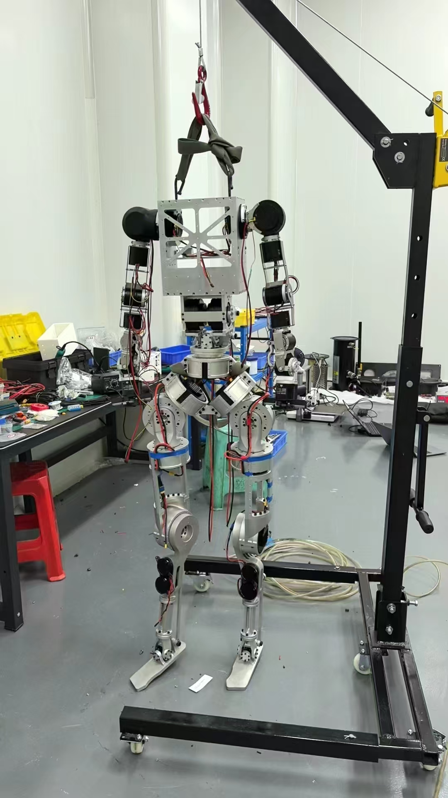
I developed the complete pipeline from MJLab policy training to real-robot deployment, including observation construction, ONNX inference, ROS2 runtime control, motor communication, parallel-joint kinematics, diagnostics, and hardware debugging.
- Training: PPO with an asymmetric Actor-Critic architecture, curriculum learning, and domain randomization.
- Runtime: C++ and ONNX Runtime policy inference at 50 Hz on an external computer.
- Communication: Ethernet, UDP, Cannelloni, SocketCAN, CAN FD, and DAMIAO actuators.
- Kinematics: Logical-to-physical mapping for parallel ankle mechanisms.
- Outcome: Completed real-robot integration and achieved stable walking.
Training and real-robot results
Representative simulation and deployment recordings.
Whole-body control validationEarlier real-robot deployment and integration recording.
Whole-body walkingAdditional real-robot walking demonstration.
Lower-body validationEarly hardware and locomotion validation.
System architecture
Closed-loop flow from policy training to physical motor feedback.
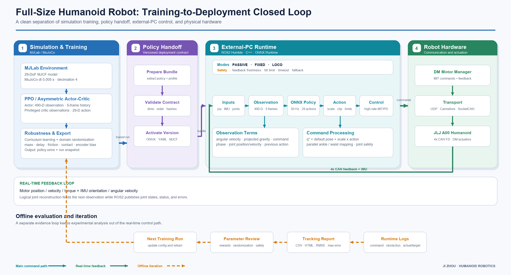
Deployment diagnostics
Joint-level tracking and runtime data
Recorded joint trajectories and control signals were used to compare expected and physical behavior during deployment and debugging.
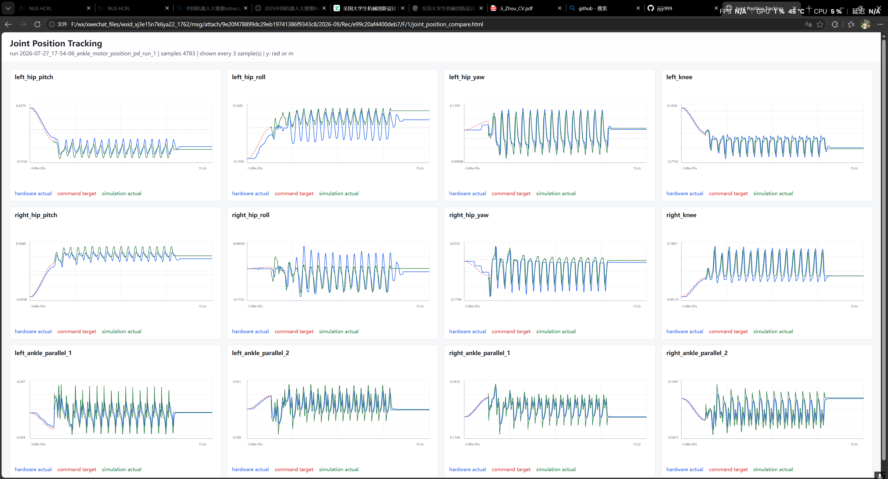
Selected Project 02 · Oct 2025 – Feb 2026
Multi-Humanoid Dance & Fleet Control
Motion training and centralized orchestration for eight Unitree G1 robots
My role
Sole developer of the fleet-control system in an approximately 10-person team; also contributed to motion training and on-site deployment.
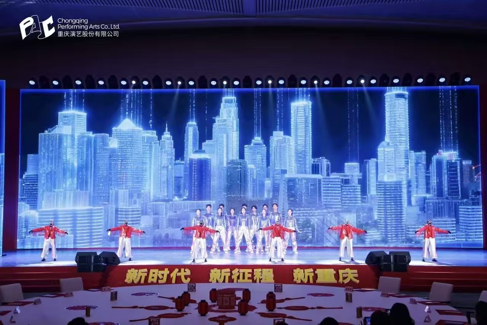
I designed and implemented a UDP-based control console for fleet-level, group-level, and individual robot control. The system coordinated stage movement, synchronized dance triggering, policy switching, and health monitoring during a live performance.
- Motion: Dance motion retargeting and policy training using GMR and BeyondMimic.
- Control: Group, subgroup, and individual targeting through a PySide6 operator interface.
- Synchronization: Absolute timestamps and repeated UDP transmission for reliable coordinated starts.
- Monitoring: Per-robot ACK state, ping latency, timeouts, and timestamped logs.
- Outcome: Live stage deployment with eight Unitree G1 humanoid robots.
Tests and live performance
Laboratory validation followed by the complete on-stage performance.
Group dance testCoordinated motion in the laboratory.
Policy synchronization testMulti-robot timing and motion validation.
Live stage performanceComplete performance involving eight G1 robots.
Operator interface
Robot selection, mode control, ACK monitoring, and event logs.
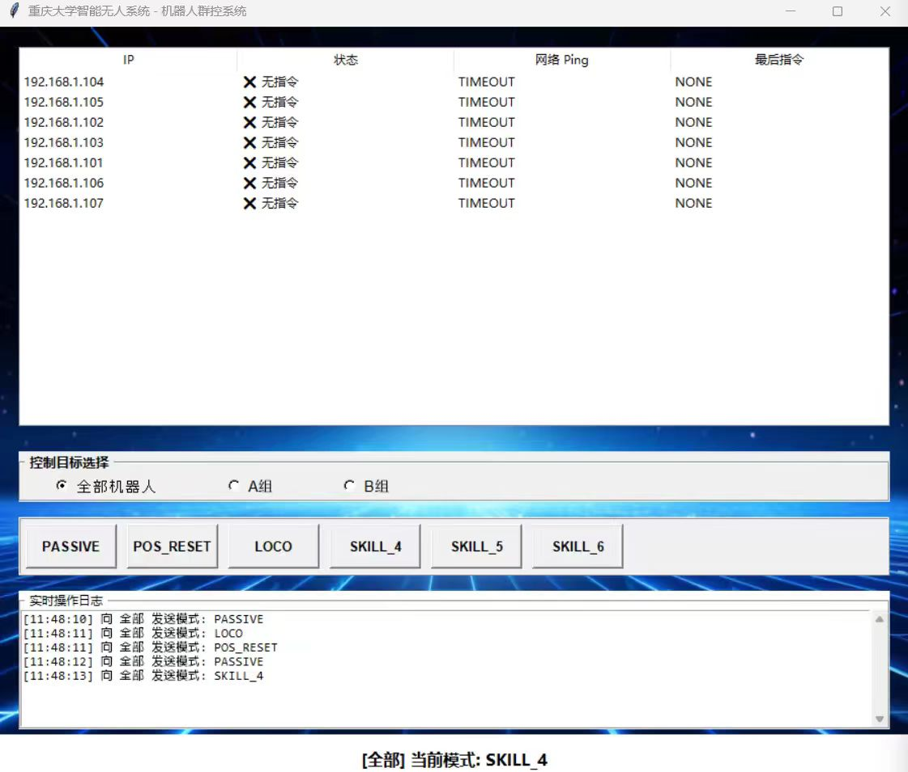
Control architecture
Command scheduling, synchronization, UDP routing, and feedback.
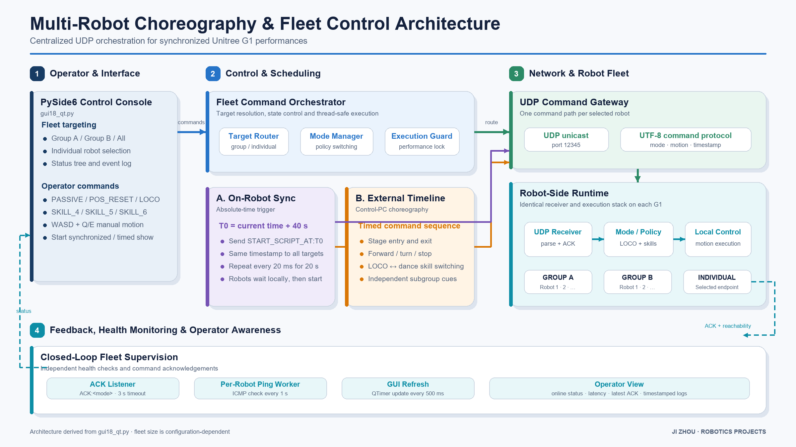
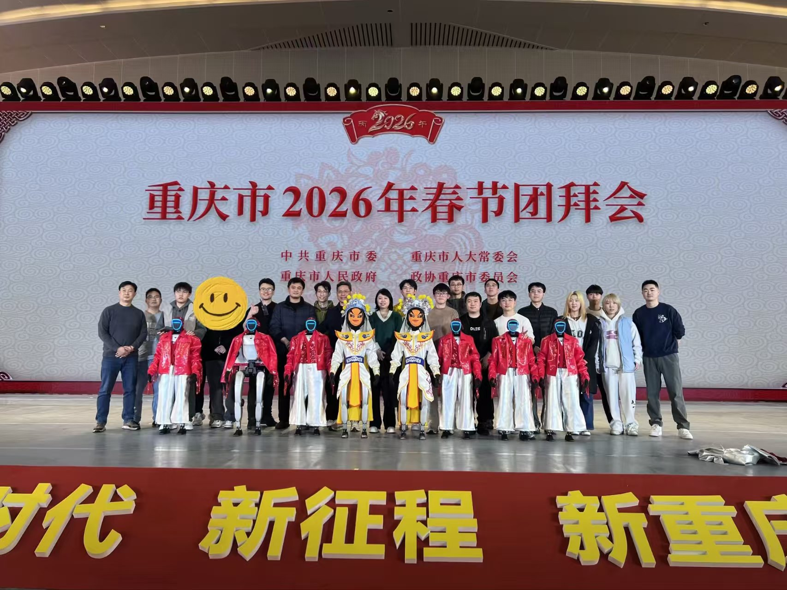
Selected Project 03 · Graduation Project
Two-Wheeled Legged Robot
Mechanical design, fabrication, and linear quadratic regulator (LQR) control
My role
Designed and fabricated the robot and implemented LQR-based control to achieve locomotion, body-height adjustment, and jumping.
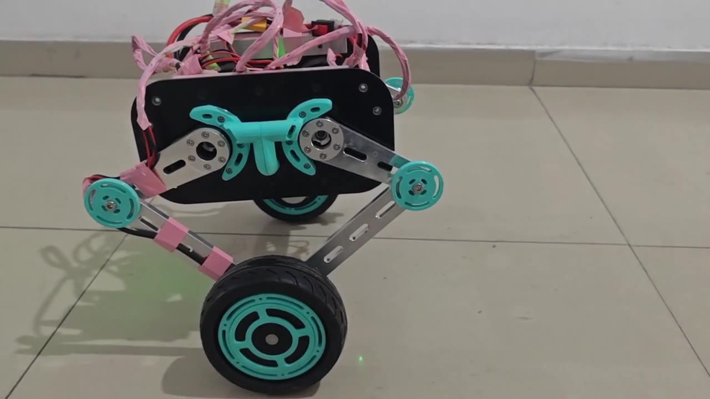
For my graduation project, I designed and built a two-wheeled legged robot and developed an LQR-based controller. The physical prototype demonstrated movement, variable body height, and jumping.
- Hardware: Robot design, fabrication, and assembly.
- Control: LQR-based control of the wheeled-legged platform.
- Validation: Simulation alongside physical motion experiments.
- Results: Locomotion, body-height adjustment, jumping, and leg-motion demonstrations.
Prototype in motion
Physical demonstrations of the robot's motion capabilities.
Body-height adjustmentChanging leg height on the physical robot.
JumpingJump demonstration with the fabricated prototype.
Left and right leg motionArticulated-leg movement on the physical platform.
Single-support circular motionMotion demonstration around a single support point.
Modeling and simulation
Model, Simulink setup, and simulation recording.
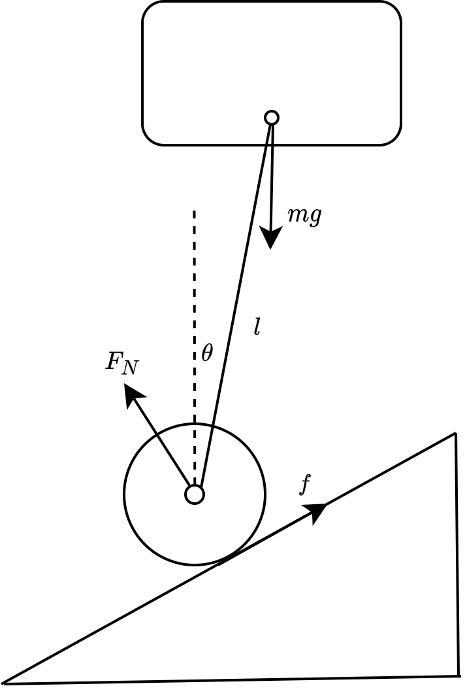
Robot modelSimplified model used in the project.
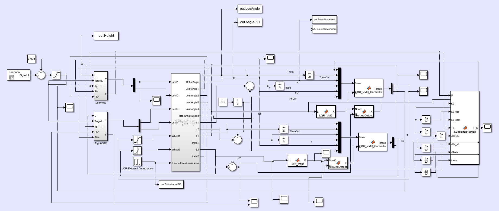
Simulink setupOpen the diagram to inspect the full model.
Simulation recordingRobot behavior in the simulation environment.
Selected Project 04 · 2023
Sorting Robot
China Robot Competition and RoboCup China Open · National Second Prize
My role · Team leader
Led mechanical design and fabrication and developed STM32F407-based embedded drive and control functions.
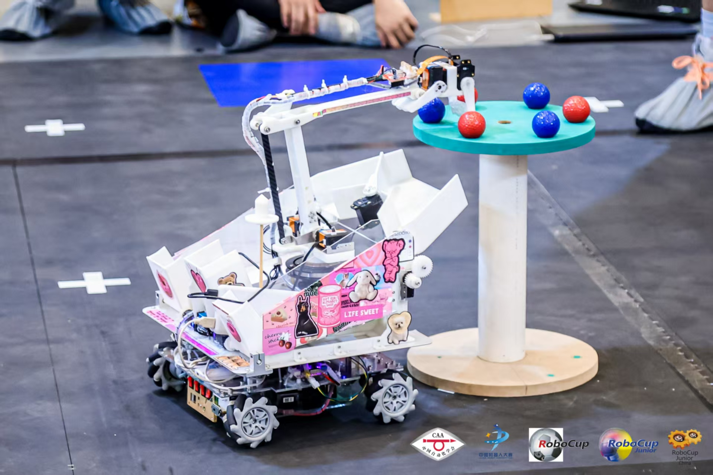
This competition project combined a mobile base, manipulator, and storage mechanism for object sorting. As team leader, I worked across mechanical fabrication, component selection, and embedded development.
- Mechanics: Robot body, manipulator, mobile base, and storage mechanism.
- Hardware: Motor and sensor selection and integration.
- Embedded control: STM32F407 drive, vision interface, control logic, and serial/I2C communication.
- Tools: SolidWorks for mechanical design and Keil for embedded development.
- Outcome: National Second Prize in 2023.
Competition and laboratory recordings
Sorting operation in the arena and during development.
Competition runThe robot operating in the competition arena.
Sorting test · 3× speedManipulator and object-handling tests in the laboratory, shown at 3× speed.
Research Showcase 05 · Everyday Research
Life in the Robotics Lab
Short recordings from daily robotics research and demonstrations
Research snapshots
A collection of everyday laboratory demonstrations, complementing the selected engineering projects above.
Stage-step demonstrationA short laboratory recording of a humanoid stepping onto a platform.
Robot teleoperation demonstrationA snapshot of everyday humanoid robot experimentation.
Contact
Research collaboration and visiting opportunities
I am interested in humanoid robot learning, loco-manipulation, reinforcement and imitation learning, and sim-to-real deployment.